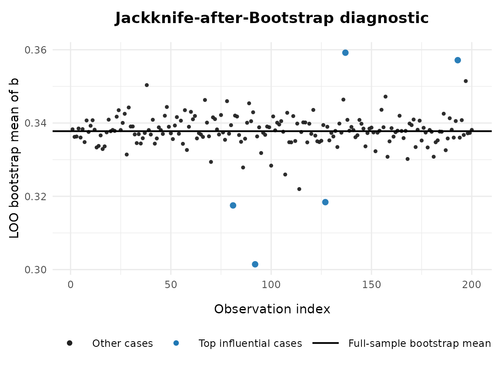
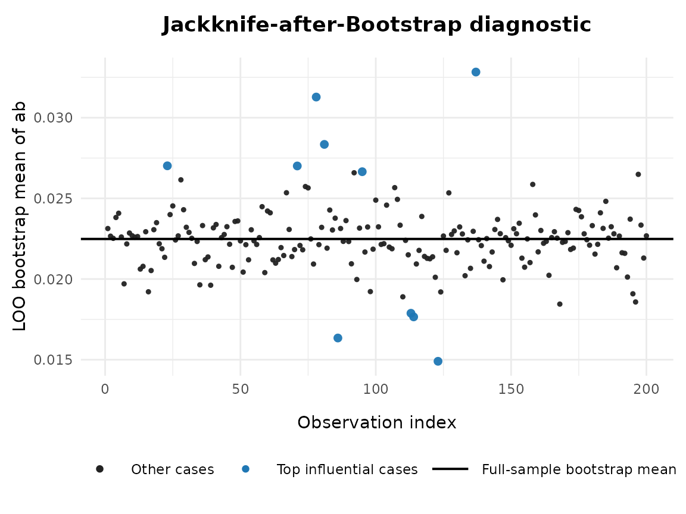

Overview
This vignette demonstrates how to use jab_after_boot()
to compute Jackknife-after-Bootstrap (JAB) influence
values for a single model parameter from a lavaan fit with
stored bootstrap replicates (includingboot.idx). The
function summarizes the full bootstrap distribution and the
leave-one-out (LOO) subdistributions, ranks influential observations,
and (optionally) plots a diagnostic figure.
library(semboottools)
library(lavaan)
#> This is lavaan 0.6-19
#> lavaan is FREE software! Please report any bugs.Arguments
The function jab_after_boot() accepts the following
arguments:
| Argument | Description |
|---|---|
fit |
A fitted lavaan object for which
store_boot() has been called with
keep.idx = TRUE. Must contain
fit@external$sbt_boot_ustd (with boot.idx
attribute), and typically fit@external$sbt_boot_std. |
param |
The target parameter to diagnose. Can be given as (i)
"lhs op rhs" (e.g., "Y ~ X",
"Y ~~ Y", "X =~ x1"), (ii) a user-defined
":=" label (e.g., "ab"), or (iii) a parameter
label (e.g., "b"). |
standardized |
Logical. If TRUE, use standardized bootstrap estimates
(standardizedSolution_boot()); if FALSE, use
unstandardized (parameterEstimates_boot()). |
top_k |
Integer. Number of most influential cases (by absolute JAB value) to report in the summary table. |
ci_level |
Numeric between 0 and 1. Confidence level for percentile bootstrap confidence intervals recomputed on each leave-one-out (LOO) subdistribution. |
min_keep |
Integer. Minimum number of bootstrap replicates to retain in each
LOO subset. Default is max(30, floor(0.2 * B)). |
plot |
Logical. If TRUE, produce a diagnostic plot showing
full-sample bootstrap mean and case-deleted bootstrap means. |
plot_engine |
Character. Choose "ggplot2" (default, modern graphics)
or "base" (basic R graphics) for the plot. |
ylab_override |
Optional character. Override the default y-axis label in the plot. |
verbose |
Logical. If TRUE (default), print summaries to console
(ALL vs. LOO). |
font_family |
Character. Font family for plotting (default "serif").
Use "sans" or "Times New Roman" for
cross-platform robustness. |
Value
The function returns a list with the following components:
| Component | Description |
|---|---|
param |
The target parameter string. |
standardized |
Logical flag indicating whether standardized bootstrap was used. |
full_summary |
Data frame with the summary statistics (mean, SE, CI) for the full
bootstrap distribution (scope = "ALL"). |
cases_summary |
Data frame of the top top_k cases ranked by absolute
JAB influence, with case index, JAB value, and LOO summaries. |
F |
The B × n occurrence matrix (bootstrap replicate by observation). |
tstar |
Full bootstrap vector for the parameter. |
plot_obj |
A ggplot object if plot = TRUE and
plot_engine = "ggplot2", otherwise NULL. |
Example
library(lavaan)
# Simulate data
set.seed(1234)
n <- 200
x <- runif(n) - 0.5
m <- 0.4 * x + rnorm(n)
y <- 0.3 * m + rnorm(n)
dat <- data.frame(x, m, y)
# Specify model
model <- '
m ~ a * x
y ~ b * m + cp * x
ab := a * b
'
# Fit model
fit0 <- sem(model, data = dat, fixed.x = FALSE)
# Store bootstrap draws
# Before calling `jab_after_boot()`, you **must** re-run the model with store_boot(keep.idx = TRUE). This is crucial: without `keep.idx = TRUE`, the bootstrap index matrix (boot.idx) will not be saved, and JAB cannot compute leave-one-out subdistributions.
fit2 <- store_boot(
fit0,
R = 5000,
iseed = 2345,
keep.idx = TRUE
)When you run jab_after_boot() with
verbose = TRUE, two blocks of output are shown:
Full-sample bootstrap summary (ALL)
This block reports the overall bootstrap distribution of the chosen parameter across all bootstrap replicates. It includes the bootstrap mean, the standard error (SE), and the percentile confidence interval. These values are consistent with what you would obtain fromstandardizedSolution_boot()orparameterEstimates_boot()without JAB. In other words, it is the reference point against which the leave-one-out results are compared.Leave-one-out (LOO) summaries
This block lists the toptop_kmost influential cases, ranked by the absolute JAB influence statistic. For each case, it shows:
- JAB_value: the influence index Large positive values mean that excluding the case increases the bootstrap mean; large negative values mean it decreases the bootstrap mean.
- mean, SE, CI.Lo, CI.Up: the bootstrap mean, standard error, and confidence interval recomputed when this case is excluded from the resampling. By comparing these numbers to the full-sample summary, you can diagnose which individual observations exert the strongest influence on the bootstrap results.
The diagnostic plot visualizes the same information:
Black points: leave-one-out bootstrap means for each observation.
Blue points: the most influential cases (top
top_kby absolute JAB value).Horizontal line: the full-sample bootstrap mean, serving as the reference. If a case is highly influential, its corresponding point will be far away from the horizontal line. The plot therefore provides an intuitive complement to the numeric summaries shown above.
# Run JAB analysis for b
res1 <- semboottools::jab_after_boot(
fit2,
param = "b",
standardized = TRUE,
top_k = 5,
plot = TRUE,
plot_engine = "ggplot2",
font_family = "sans"
)
#>
#> === Full-sample bootstrap summary (ALL) ===
#> scope param mean SE CI.Lo CI.Up
#> ALL b 0.3377757 0.07087301 0.1941315 0.4714736
#>
#> === Leave-one-out (LOO) summaries ===
#> case JAB_value mean SE CI.Lo CI.Up
#> 92 -7.265716 0.3014471 0.06691697 0.1675634 0.4262696
#> 137 4.284467 0.3591980 0.07043389 0.2110645 0.4911241
#> 81 -4.052481 0.3175133 0.06999906 0.1731859 0.4480780
#> 193 3.876416 0.3571577 0.06899989 0.2152160 0.4887382
#> 127 -3.873037 0.3184105 0.07269465 0.1762345 0.4551080
# Run JAB analysis for ab
res2 <- semboottools::jab_after_boot(
fit2,
param = "ab",
standardized = TRUE,
top_k = 10,
plot = TRUE
)
#>
#> === Full-sample bootstrap summary (ALL) ===
#> scope param mean SE CI.Lo CI.Up
#> ALL ab 0.02248262 0.02801863 -0.03249827 0.0801279
#>
#> === Leave-one-out (LOO) summaries ===
#> case JAB_value mean SE CI.Lo CI.Up
#> 137 2.0694700 0.03282997 0.02927190 -0.02581250 0.08970996
#> 78 1.7594344 0.03127979 0.02776399 -0.02456933 0.08757414
#> 123 -1.5161302 0.01490197 0.02800061 -0.04028824 0.06810769
#> 86 -1.2273696 0.01634577 0.02687397 -0.03770233 0.06672054
#> 81 1.1724804 0.02834502 0.02614015 -0.02180055 0.08551743
#> 114 -0.9656210 0.01765451 0.02747352 -0.03468617 0.07179822
#> 113 -0.9207178 0.01787903 0.02811111 -0.03733626 0.07244217
#> 23 0.9070081 0.02701766 0.02802264 -0.02655530 0.08500396
#> 71 0.9052507 0.02700887 0.02817719 -0.02667212 0.08719627
#> 95 0.8340024 0.02665263 0.02756542 -0.02685990 0.08404846